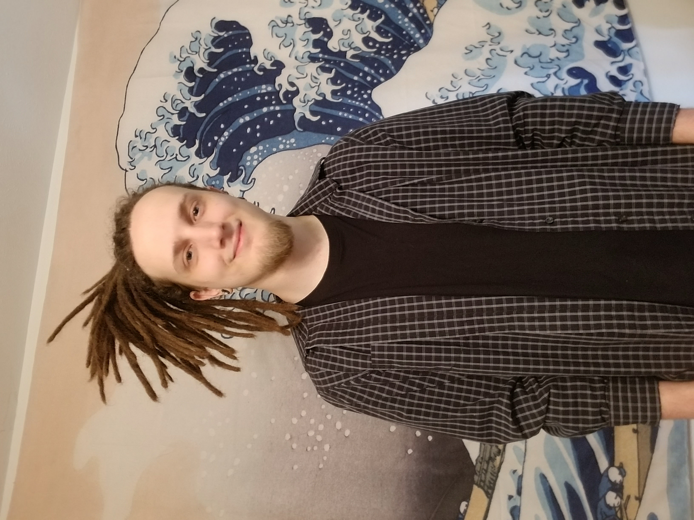

About Me
Hello! My name is Jesse and I am a half self-taught, half, (soon to be), college graduate computer programmer with a focus on front end/creative design. I excel in team based or solo environments, have excellent communication skills and am best used wherever strong problem solving or critical thinking is required. I also have recent experience working in a network enviroment with active directory, SCCM and LIMS.
Education:
Lone Star Cyfair College – Computer Programming Specialist (2022)
Courses: Introduction to MySQL, Introduction to Databases, Beginner and Adv C++ Programming, Systems Analysis, Web Programming, Business and Prof. Comm., Project Manage Software, IT Essentials, Computer Programming, College Algebra.
Technical Skills
- Front end design with HTML, CSS & Javascript
- SCCM Management
- SQL
- C++, C# & Python
- Computer OS Installation and Imaging
- Robust Software and Hardware Knowledge
C++ German-English Dictionary Program
Using parallel vectors and file operations this program that allows users to enter German words with their gender specificity and English translation into a file saved database, and allows users to test themselves on that data with 2 different tests. (German to English /English to German) The program uses parallel vectors and file operations.
Check the Code out here
JS Hard Snake
Snake written in JavaScript from a YouTube Tutorial, edited to be harder and use more elements. Uses CSS grid to organize elements and loops through arrays to move and control logic.
PLAY
CODE
WordPress Portfolio
A similar, yet different portfolio I made in WordPress with Elementor and then converted to static HTML/CSS, whereas portfolio you are reading this on was written with vanilla HTML/CSS. This was done to show an ability to create webpages with vanilla code or industry tools. Check it out